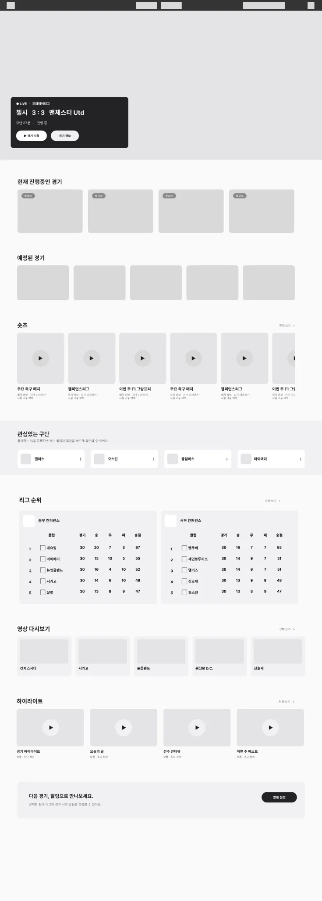
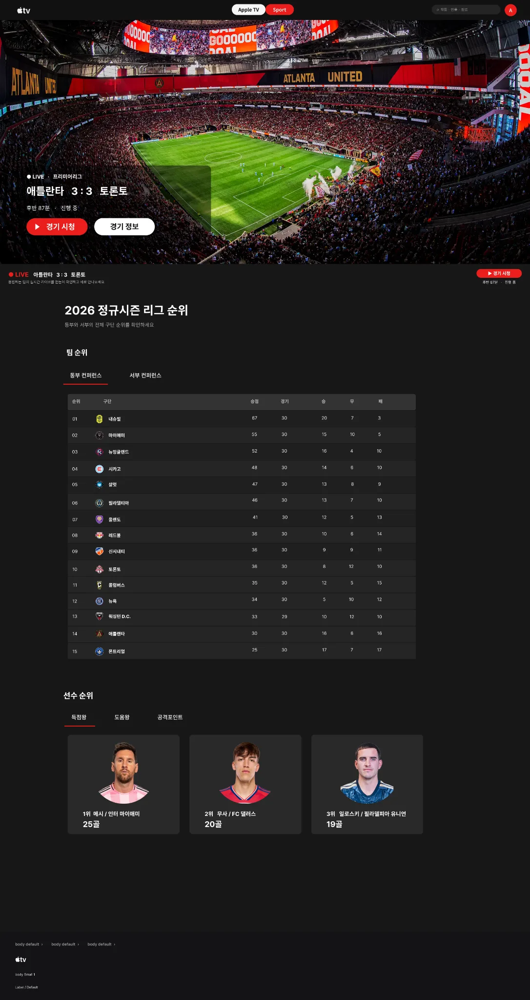
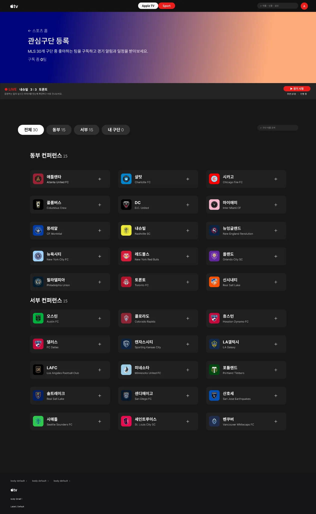

Pain Point 01
탐색 구조가 복잡함
어떤 콘텐츠가 있는지 한눈에 파악하기 어렵고, 프로모션 중심 배치가 많아 목적지까지 도달하는 경로가 길었습니다.
영화·시리즈의 몰입감과 MLS 스포츠의 실시간성을 하나의 Apple TV 경험으로 연결했습니다. 발견은 더 쉽게, 시청은 더 깊게.
영화·시리즈는 발견과 구독 가치 전달, 스포츠는 경기 정보와 시청 흐름에서 각각 다른 불편이 있었습니다. 두 경험을 하나의 설계 원칙으로 해결했습니다.
어떤 콘텐츠가 있는지 한눈에 파악하기 어렵고, 프로모션 중심 배치가 많아 목적지까지 도달하는 경로가 길었습니다.
회차 정보, 진행률, 경기 상태, 재생 오류 원인 같은 상세 안내가 약해 사용자가 중요한 순간에 망설이게 됩니다.
이어보기, 관심 구단 알림, 다음 콘텐츠 추천의 연결이 느슨해 반복 사용 흐름이 자연스럽게 이어지지 않았습니다.
브랜드 감성은 유지하되 구조는 더 선명하게 만들었습니다. 신규 유저에게는 서비스의 가치가 바로 보이도록, 기존 유저에게는 이어보기와 다음 탐색이 끊기지 않도록 설계했습니다.
콘텐츠 감상과 실시간 경기 탐색의 목적을 분리하되, 상단 전환 구조로 이동 비용을 줄였습니다. 사용자가 필요할 때만 AI 어시스턴트를 호출하도록 설계했습니다.
추천 작품 · 영화 · 시리즈에서 콘텐츠를 발견하고, 작품 상세와 이어보기를 통해 시청을 이어갑니다.
진행 중 경기 · 예정 경기 · 리그 순위를 확인하고 중계, 기록, 다시보기로 이어집니다.
어시스턴트는 콘텐츠 위에 항상 펼쳐놓는 패널이 아니라 필요할 때 호출하는 고정 진입점입니다. 영화 추천과 스포츠 정보 탐색을 같은 대화 흐름에서 지원하도록 구상했습니다.
“오늘 가볍게 볼 영화 추천해줘” → 취향에 맞는 후보와 간단한 추천 근거 제공
“관심 구단 다음 경기는 언제야?” → 예정 경기와 상세 화면으로 연결
신규·기존 사용자의 목표를 여정 흐름으로 먼저 비교했습니다. 아래 IA & Outputs에서는 각 목적을 화면 구조에 어떻게 반영했는지 구체적으로 보여줍니다.
김서윤, 29세 — 작품에 관심은 있지만 서비스 가치와 작품 차별성이 명확하지 않으면 구독 결정을 망설이는 사용자입니다.
이준호, 34세 — 보던 작품을 바로 이어보고, 다음 콘텐츠도 고민 없이 찾고 싶은 충성 사용자입니다.
구독 전에 가치가 분명히 보이도록 콘텐츠 발견과 안내를 강화합니다.
재진입부터 다음 콘텐츠까지 끊기지 않는 흐름을 설계합니다.
사진을 단순히 나열하지 않고, 어떤 과정을 거쳐 화면이 발전했는지 이해되도록 lo-fi → hi-fi 흐름으로 재배치했습니다.

진행중 경기, 예정 경기, 숏츠, 리그 순위, 하이라이트가 어떤 순서와 밀도로 배치되어야 하는지 먼저 검증했습니다.
시네마틱한 히어로 이미지와 카드형 콘텐츠를 결합해 브랜드 감성은 유지하면서 정보의 우선순위는 더 선명하게 드러냈습니다.
하나의 컴팩트한 웹 목업 안에서 중계·기록·채팅·다시보기를 좌우로 넘겨 확인할 수 있습니다.
경기 시청의 맥락을 잃지 않고 필요한 정보로 이동할 수 있도록 탭·기록·리플레이를 한 경험으로 설계했습니다.
사용자가 한 경기만 보고 끝나지 않도록 리그 이해, 관심 구단 등록, 다음 탐색의 흐름을 함께 설계했습니다.

경기 소비 이후 더 깊게 탐색할 수 있도록 팀 순위와 선수 순위를 한 화면 흐름으로 연결했습니다.

선호 팀을 등록하면 일정과 알림을 받을 수 있도록 하여 개인화와 재방문 동기를 강화했습니다.
페르소나 → 불편한 경험 → 필요한 기능 → 정보구조와 플로우차트로 이어지는 설계 과정입니다. 모든 다이어그램은 웹 요소로 직접 구성했습니다.
“볼 만한 작품이 있는지 알기도 전에 구독부터 결정하라고 해서 망설여져요.”
설계 대응 — 영화·시리즈 콘텐츠의 발견 경로와 작품의 추천 이유, 구독 가치 안내를 명확하게.
“어디까지 봤는지 찾고, 다음에 뭘 볼지 다시 고르는 과정이 번거로워요.”
설계 대응 — 이어보기와 다음 작품 추천을 연결하고 스포츠는 관심 구단의 경기·다시보기로 재방문 유도.
해비치·청약플러스 프로젝트처럼 토큰과 컴포넌트를 표준화해 화면마다 일관된 시각 언어를 사용했습니다.
콘텐츠 이미지를 가장 앞에 두고, 상태 정보와 중요한 버튼에만 강조색을 사용합니다.
무엇이 좋았고 어떤 점은 더 보완해야 하는지 명확하게 드러나도록 마지막 리뷰 섹션을 구성했습니다.
시네마틱한 무드와 여백의 미를 유지하면서도 탐색, 이어보기, 가치 이해 같은 실제 페인 포인트를 구조적으로 해결했습니다.
TV+ Assistant와 다양한 정보 계층이 과해지면 시각적 브라우징을 선호하는 사용자에게 오히려 부담이 될 수 있습니다.